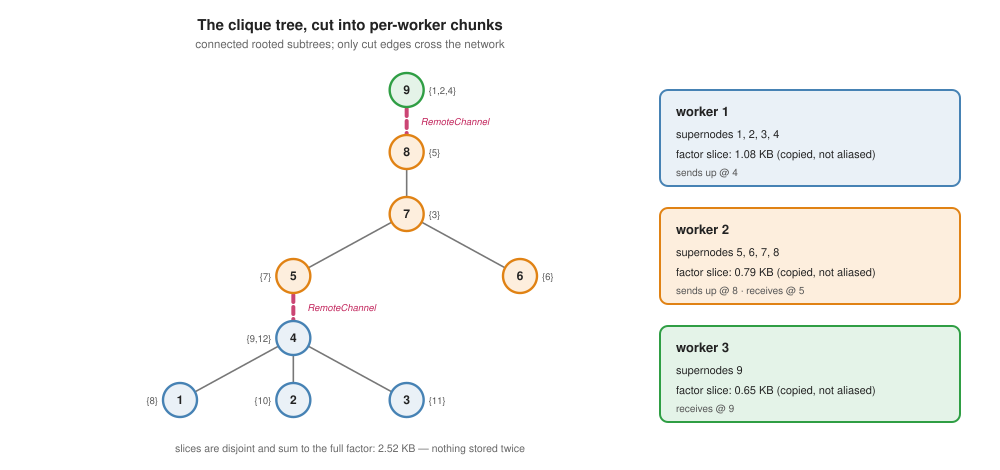
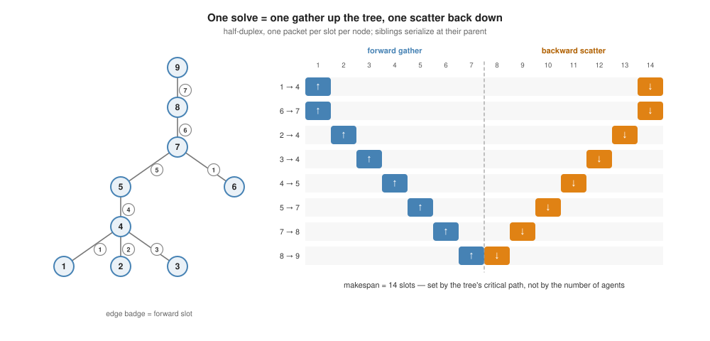

Distributing the solve
The multifrontal solve of the previous page is already organized per supernode; what remains is to cut the tree across machines and prove the messages that cross the cuts are sufficient. This page does both, then derives the communication schedule the benchmarks charge.
Why the serial code cannot be split
CliqueTrees.Multifrontal passes every $m_2$ update through one shared stack, indexed by traversal position. A stack is a single mutable object with a single owner, precisely what a fleet does not have.
The fix is bookkeeping, not mathematics: store each supernode's contribution in a slot addressed by its own id (tree_forward_ldiv! / tree_backward_ldiv!). The arithmetic is unchanged (the tests pin both passes against the serial solve to machine precision), but now any subset of supernodes can live anywhere, because nothing is shared except explicit parent–child hand-offs.
Cutting the tree
partition_tree assigns supernodes to workers by one bottom-up sweep: accumulate subtree weight (bag size, a solve-cost proxy) in postorder, and seal a chunk whenever the running total reaches $\text{total}/\text{workers}$. Because a seal always happens along an existing tree edge:
- every chunk is a connected, rooted subtree, and
- the cut edges (parent/child pairs split across workers) number exactly $\text{chunks} - \text{roots}$, the minimum possible.
Each worker then receives its own copied slice via worker_factorization: the $D_{11}/L_{21}$ blocks for its supernodes, the symbolic tree restricted to them, and its boundary lists. Residuals are disjoint (previous page), so the slices partition the factor. Nothing is stored twice, and the sum of the slices is the centralized factor exactly.

For an agent: the card is the whole payload a worker is shipped. In the running example, worker 2's entire share of a 30-dimensional coordination problem is 0.79 KB.
A star sheaf has one wide separator and no interior edge to cut, so it collapses toward one chunk no matter how many workers are requested. This is not a partitioner defect. It is the sheaf's own separator width making the limit of decentralization explicit. The benchmarks quantify it: on a star, the tree method ties the centralized coordinator, and nothing beats either.
The messages, and why they suffice
With chunks on separate processes, only cut edges carry traffic, and distributed_tree_solve gives each one a RemoteChannel.
Forward. Child-side supernode $j$ sends its parent the update
\[m_2 \;=\; f_2 - L_{21}\, y_1 \;\in\; \mathbb R^{a_j},\]
keyed by the global ids of $\mathrm{sep}(j)$. This is sufficient by construction: $m_2$ is the Schur-complement action of $j$'s entire subtree on its boundary, and by the tree property no other worker's variables interact with that subtree except through $\mathrm{sep}(j)$.
Backward. The parent-side worker must return the solved boundary values. Here is the one genuine subtlety, and it was found by testing on general graphs, not by design:
Fill-in can make a child's separator reach past its parent, into the parent's own separator. In the running example this happens at supernode 3: its separator is agents $\{7, 9\}$, but its parent (supernode 4) eliminates only agent 9's block, so agent 7 belongs to the parent's separator. So the parent must send down its entire bag, $\mathrm{res} \cup \mathrm{sep}$, and a worker must merge every received boundary value into its own solved-value store, because a deeper node in the same chunk may need the same pass-through value. Both rules are load- bearing, and the general-topology tests fail without either.
Sufficiency of the bag is again the tree property: whatever a child's separator references is being eliminated at an ancestor, every ancestor's value reaches the parent by induction, and $\mathrm{sep}(\text{child}) \subseteq \mathrm{res}(\text{parent}) \cup \mathrm{sep}(\text{parent})$.
The schedule
Charge communication with one explicit rule and derive everything from it:
Radios are half-duplex and carry one packet per time slot: in any slot, a node participates in at most one message. The makespan of an operation is the number of slots to complete it, the critical path of its message schedule, with siblings serializing at their shared parent.
Under this rule the forward pass is a gather on the tree and the backward pass its mirror, so
\[\text{makespan} \;=\; 2\, \mathrm{cp}(T), \qquad \mathrm{cp}(j) \;=\; \max_{\text{orderings}} \min \;\text{(children served one per slot)},\]
computed exactly by the greedy earliest-ready schedule. The figure below is that schedule for the running example, not a sketch of it:

Fourteen slots, end to end, set by the tree's critical path, not by the number of agents. The same schedule, animated:

For an agent: my radio is busy for a handful of slots per solve, however large the fleet is. What grows with fleet size is the tree's depth, and the comparison page shows the elimination ordering keeps even that logarithmic.
What this buys, before any benchmark
- Exactness. Same arithmetic, same answer to $\sim 10^{-16}$, verified against the serial solve on every test topology and in a real three-process run in the worked example.
- No duplication. The factor is partitioned, so per-agent memory is a fraction, not a copy.
- Tree-depth communication. Makespan $2\,\mathrm{cp}(T)$, constant in fleet size for fixed depth.
- One honest boundary. Logical tree edges are not always physical radio links (fill-in), so a deployment pays a routing factor. The comparison page measures that factor instead of assuming it away.